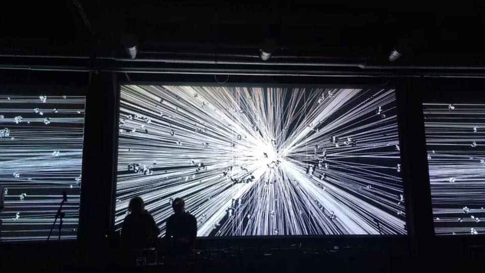

about

Tonoptik is an art studio in the field of new media, audiovisual, light and sound art with an emphasis on minimalist aesthetics and experimentation, which is based on a free exploration of modern technologies and their interaction with humans.
Tonoptik is a laureate of the Spanish MADATAC Award, in 2020 won a special prize from the Cyland MediaArt Lab for an audiovisual work, and Honorary Mentioned by the Share Prize XV jury.
Noor Riyadh Festival, Riyadh, Saudi Arabia, 2025
All Aboard Exhibition at Athens International Airport, Athens, Greece 2025
ILightSingapore Festival, Singapore, 2025
Istanbul International Theater Festival, Istanbul, 2024
WIP, Nicosia, Cyprus, 2024
Artefacts Athens Festival, Athens, Greece 2024
Rubix Festival, Tivat, Montenegro 2024
Share Festival, Turin, Italy, 2023
Signal festival, Nikola-Lenivec, Russia, 2021
RGB Light Experience festival, Rome, Italy, 2018
Shelter festival, Helsinki, Finland, 2018
MADATAC festival, Centro Conde Duque, Madrid, Spain, 2017